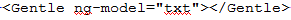
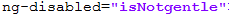

Simple angularJS module plugin which will filter out bad/swear word from input static data. simple directives here will show the bad word on type and service 'paragraph' with 'isGentle' method, method will take input string and find the bad/swear worlds if found return the list of bad words in input text, it checks around thousand bad/swear words and can be filtered.
bower install ngGentle
var app = angular.module('myApp', ['ngGentle']);`
just add this any where to show the entered bad word  use this scope to disable the button  NOTE : scope variable should be "txt".sample code :
<div> <textarea class="form-control" rows="3" id="textArea" ng-model="txt" placeholder="type here swear/bad words to test the gentle directive"></textarea> <span class="help-block"> <Gentle ng-model="txt"></Gentle></span> <button type="submit" class="btn btn-primary" ng-disabled="isNotgentle">Submit</button> this submit button will be disabled on bad word entry </div>